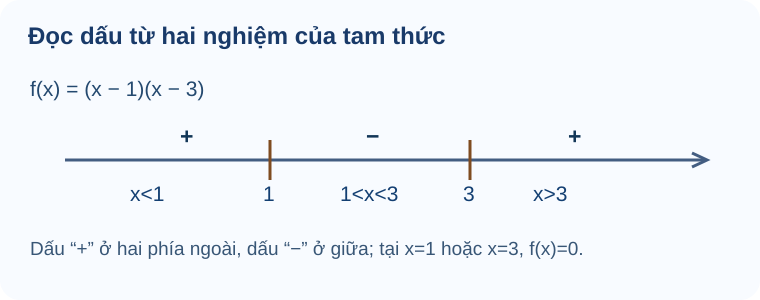

Bài 17. Dấu của tam thức bậc hai
TOÁN 10 · CHƯƠNG VI · BÀI 17
Tìm hiểu dấu của tam thức bậc hai, bảng xét dấu và cách giải bất phương trình bằng định lí về dấu.
Cùng tìm hiểu
Đồ thị parabol có thể cắt trục hoành tại hai điểm, tiếp xúc tại một điểm hoặc không gặp trục hoành. Mỗi trường hợp làm cho dấu của tam thức bậc hai thay đổi theo một cách khác nhau. Vì vậy, trước khi học bảng dấu, em hãy nhìn mối liên hệ giữa nghiệm của phương trình \(f(x)=0\) và phần đồ thị nằm trên hay dưới trục \(Ox\).
Với \(f(x)=(x-1)(x-3)\), hai nghiệm là \(1\) và \(3\). Khi \(x<1\), cả hai thừa số âm nên tích dương; khi \(1<x<3\), tích âm; khi \(x>3\), cả hai thừa số dương nên tích dương. Em vừa tự lập được bảng dấu mà chưa phải ghi nhớ câu “cùng dấu với a ở ngoài”.
Khi giải bất phương trình, mục tiêu là tìm các khoảng giá trị của \(x\) làm biểu thức dương, âm hoặc bằng 0, chứ không phải chỉ tìm nghiệm phương trình. Dấu \(>\) hay \(\ge\) quyết định có lấy các mốc nghiệm hay không.
Ví dụ trực quan
Dấu của tam thức là vị trí đồ thị so với Ox
Một biểu thức \(ax^2+bx+c\) có thể dương ở nơi này, âm ở nơi khác. Thay từng x vô hạn lần là bất khả thi; ta dùng hình parabol và số nghiệm để suy dấu cả khoảng.
Đã biết parabol của B16, hệ số a khác 0, biệt thức \(\Delta=b^2-4ac\) và đồ thị trên/dưới trục hoành. Em có thể học các kiến thức tiền đề ngay trong bài.
Tam thức bậc hai là \(f(x)=ax^2+bx+c\) với a≠0. Dấu của f(x) tại x chính là vị trí đồ thị so với trục Ox; nghiệm f(x)=0 là chỗ giao/tiếp xúc Ox. Số nghiệm được quyết định bởi \(\Delta\), còn hướng mở theo a.
Vì sao chọn phương pháp này? Kiểm a≠0 trước khi gọi biểu thức là tam thức bậc hai; không lấy mỗi dấu c hoặc mỗi dấu Δ để suy dấu tất cả x.
Vận dụng. Với \(f(x)=x^2+2x+5\), tính \(\Delta\), xác định số nghiệm thực và dấu f(x) trên \(\mathbb R\).
Đối chiếu
Đáp án: \(\Delta=2^2-4\cdot1\cdot5=-16<0\). Không có nghiệm thực, và \(f(x)>0\) với mọi x.
Vì sao: a=1>0 nên parabol mở lên; không cắt Ox khi Δ<0. Đồng thời \(f(x)=(x+1)^2+4>0\) kiểm chứng trực tiếp.
Đây là câu tự luyện công khai, không chấm điểm thành thạo. Nếu chưa đúng, mở hướng dẫn tự sửa phía dưới.
Nghiệm kép là tiếp xúc, không phải đổi dấu
Một parabol có thể chỉ vừa chạm trục Ox rồi quay lại, thay vì cắt qua. Tại điểm chạm, giá trị bằng 0 nhưng dấu ở hai bên không đổi.
Biết biểu thức bình phương không âm và dấu a; hiểu nghiệm kép khi \(\Delta=0\). Em có thể học các kiến thức tiền đề ngay trong bài.
Với \(\Delta=0\), tam thức viết được dưới dạng \(a(x-x_0)^2\). Nó bằng 0 tại x0, có dấu của a ở mọi điểm khác; vì bình phương không âm nên không có sự đổi dấu khi đi qua nghiệm kép.
Vì sao chọn phương pháp này? Phân biệt \(f(x)\le0\) với \(f(x)<0\) ở điểm nghiệm; dấu bằng là một phần của bất phương trình.
Vận dụng. Với \(f(x)=-3(x-2)^2\), tìm tập nghiệm của \(f(x)<0\) và của \(f(x)\le0\).
Đối chiếu
Đáp án: \(f(x)<0\) khi \(x\ne2\); \(f(x)\le0\) với mọi \(x\in\mathbb R\).
Vì sao: Do −3 nhân bình phương luôn ≤0, chỉ bằng 0 khi x=2; khi x≠2 tích âm.
Đây là câu tự luyện công khai, không chấm điểm thành thạo. Nếu chưa đúng, mở hướng dẫn tự sửa phía dưới.
Giải bất phương trình là tìm khoảng, không chỉ tìm nghiệm phương trình
Điều kiện diện tích hay lợi nhuận thường yêu cầu không ít hơn một mức, nên đáp án là cả một khoảng giá trị x chứ không phải chỉ các nghiệm biên.
Đã biết phân tích thành nhân tử, nghiệm 2 và 3 của \((x-2)(x-3)=0\), dấu tích và khoảng trên trục số. Em có thể học các kiến thức tiền đề ngay trong bài.
Nghiệm của \(f(x)=0\) chia trục số thành những khoảng có dấu cố định. Để giải \(f(x)\le0\), ta chọn những khoảng mà f âm và lấy cả các nghiệm bằng 0; với dấu < thì bỏ các đầu mút.
Vì sao chọn phương pháp này? Tìm nghiệm trước, lập dấu qua hệ số a và thứ tự nghiệm; không lấy phần ngoài nếu a>0 và yêu cầu ≤0.
Vận dụng. Giải bất phương trình \(x^2-5x+6\le0\).
Đối chiếu
Đáp án: \(x^2-5x+6=(x-2)(x-3)\le0\Rightarrow x\in[2;3]\).
Vì sao: Parabol mở lên nên biểu thức ≤0 ở giữa hai nghiệm 2,3; dấu bằng buộc lấy cả 2 và 3.
Đây là câu tự luyện công khai, không chấm điểm thành thạo. Nếu chưa đúng, mở hướng dẫn tự sửa phía dưới.
Ứng dụng rào vườn phải lọc miền hình học
Có đủ dây rào chưa đảm bảo mọi chiều rộng đều tạo được vườn hình chữ nhật; chiều dài còn lại phải dương và diện tích cần đạt mức đặt ra.
Biết diện tích S=chiều rộng×chiều dài, ba cạnh rào có hai chiều rộng x và một chiều dài L; nghiệm bất phương trình bậc hai. Em có thể học các kiến thức tiền đề ngay trong bài.
Với 20 m dây rào ba cạnh sát tường, đặt x là chiều rộng, chiều dài còn lại \(20-2x>0\) đòi \(0<x<10\). Diện tích \(S(x)=x(20-2x)\). Bất phương trình S≥48 cho khoảng x, nhưng phải giao với miền hình học trước khi kết luận.
Vì sao chọn phương pháp này? Đặt điều kiện từ hình trước, lập S(x), giải bất phương trình và giao nghiệm với \(0<x<10\); ghi đơn vị m, m².
Vận dụng. Có 20 m lưới rào ba cạnh hình chữ nhật sát tường. Gọi x (m) là chiều rộng vuông góc tường. Muốn diện tích ít nhất \(48\,\mathrm{m}^2\), x được chọn trong khoảng nào?
Đối chiếu
Đáp án: \(S=x(20-2x)\ge48\Leftrightarrow -2(x-4)(x-6)\ge0\Leftrightarrow x\in[4;6]\) (m), đã thuộc \(0<x<10\).
Vì sao: Hai cạnh rộng x sử dụng 2x m lưới, cạnh còn lại 20−2x; dấu ≥ lấy hai đầu x=4,6 đều cho 48 m².
Đây là câu tự luyện công khai, không chấm điểm thành thạo. Nếu chưa đúng, mở hướng dẫn tự sửa phía dưới.
Bất phương trình tham số đúng với mọi số thực — hệ số a cố định
Để một thiết kế đảm bảo điều kiện dương với mọi x, ta không thể kiểm vài giá trị mẫu mà phải loại hết khả năng biểu thức bằng 0 hoặc âm.
Ôn \(\Delta=b^2-4ac\), định lí dấu với \(a>0\), \(\Delta<0\) thì tam thức dương mọi x. Lưu ý về phạm vi bài học: Trong các bài toán tam thức bậc hai cơ bản, hệ số a cố định và khác 0; nếu a phụ thuộc tham số và có thể bằng 0 thì đó là trường hợp cần xem xét riêng, không áp dụng ngay bảng dấu của tam thức bậc hai. Em có thể học các kiến thức tiền đề ngay trong bài.
Xét \(f_m(x)=x^2+2mx+4\). Do hệ số trước x² luôn \(1>0\), để \(f_m(x)>0\) với mọi \(x\in\mathbb R\) cần và đủ parabol mở lên không chạm, không cắt Ox: \(\Delta<0\). Nếu dấu yêu cầu là ≥0 thì \(\Delta\le0\) cũng được; phân biệt dấu là bản chất.
Vì sao chọn phương pháp này? Trước tiên xác nhận a không phụ thuộc m và a>0; sau đó giải bất phương trình \(\Delta(m)<0\). Không ép học sinh giải trường hợp a(m)=0 vốn không thuộc outcome Core đang xét.
Vận dụng. Tìm mọi \(m\in\mathbb R\) để \(x^2+2mx+4>0\) với mọi \(x\in\mathbb R\).
Đối chiếu
Đáp án: Vì a=1>0, yêu cầu tương đương \(\Delta=(2m)^2-4\cdot1\cdot4=4m^2-16<0\), nên \(-2<m<2\).
Vì sao: Điều kiện tương đương m²<4. Nếu m=±2 thì Δ=0, tam thức chạm Ox và bằng 0 tại một x nên không thỏa dấu nghiêm ngặt >0.
Đây là câu tự luyện công khai, không chấm điểm thành thạo. Nếu chưa đúng, mở hướng dẫn tự sửa phía dưới.
Thuật ngữ, kiến thức và kỹ năng
Thuật ngữ: Tam thức bậc hai với \(a\ne0\), biệt thức \(\Delta\), nghiệm phân biệt, nghiệm kép, bảng xét dấu, bất phương trình bậc hai.
Sau bài học, em cần làm được: Kiểm tra \(a\ne0\), tìm nghiệm và xét dấu theo từng khoảng; phân biệt parabol cắt trục và tiếp xúc trục \(Ox\); giải bất phương trình và đối chiếu điều kiện thực tế.
2.1. Dấu của tam thức bậc hai
Tam thức bậc hai theo biến \(x\) là biểu thức
Đặt \(\Delta=b^2-4ac\). Để xét dấu tam thức, cần biết dấu của hệ số \(a\) và số nghiệm thực của \(f(x)=0\). Đồ thị \(y=f(x)\) là một parabol: phía trên trục hoành biểu diễn \(f(x)>0\), phía dưới biểu diễn \(f(x)<0\).
Định lí về dấu của tam thức bậc hai
| Biệt thức | Nghiệm thực của \(f(x)=0\) | Dấu \(f(x)\) |
|---|---|---|
| \(\Delta<0\) | Không có | Luôn cùng dấu với \(a\) trên \(\mathbb R\) |
| \(\Delta=0\) | Nghiệm kép \(x_0=-b/(2a)\) | Bằng \(0\) tại \(x_0\); cùng dấu với \(a\) ở mọi nơi khác |
| \(\Delta>0\) | Hai nghiệm \(x_1<x_2\) | Cùng dấu \(a\) khi \(x<x_1\) hoặc \(x>x_2\); trái dấu \(a\) khi \(x_1<x<x_2\); bằng \(0\) tại \(x_1,x_2\) |
Mẹo nhớ có kiểm chứng: Khi có hai nghiệm, ngoài cùng dấu \(a\); trong trái dấu \(a\). Mẹo này không thay thế xét riêng các trường hợp \(\Delta=0\) và \(\Delta<0\).
Ví dụ 1. Xét \(f(x)=-x^2+4x-3=-(x-1)(x-3)\). Ta có \(a=-1\), hai nghiệm \(1<3\). Vì vậy \(f(x)<0\) trên \((-\infty;1)\cup(3;+\infty)\), \(f(x)>0\) trên \((1;3)\) và \(f(x)=0\) tại \(x=1,3\).
Ví dụ 2. \(g(x)=x^2-2x+1=(x-1)^2\ge0\) với mọi \(x\). Dấu bằng chỉ xảy ra tại \(x=1\) (\(\Delta=0\)). Không được nói \(g(x)>0\) với mọi \(x\).
Bảng xét dấu

Cách đọc hình. Đọc hai nghiệm 1 và 3 từ trái sang phải. Dấu của (x−1)(x−3) là dương ở ngoài, âm ở giữa; tại nghiệm bằng 0. Nét này minh họa trường hợp a>0 và hai nghiệm phân biệt.
Trên bảng xét dấu, mỗi nghiệm của tam thức là điểm phân chia khoảng; tại nghiệm thì giá trị bằng \(0\). Với \(\Delta>0\) và \(x_1<x_2\), dấu được xác định như sau:
| Vị trí | \((-\infty;x_1)\) | \(x_1\) | \((x_1;x_2)\) | \(x_2\) | \((x_2;+\infty)\) |
|---|---|---|---|---|---|
| Nếu \(a>0\) | \(+\) | \(0\) | \(-\) | \(0\) | \(+\) |
| Nếu \(a<0\) | \(-\) | \(0\) | \(+\) | \(0\) | \(-\) |
Khi \(\Delta=0\), không xuất hiện khoảng đổi dấu qua nghiệm kép; khi \(\Delta<0\), tam thức không có nghiệm và giữ nguyên dấu của \(a\). Cần xét đúng biểu thức tam thức bậc hai, không tự áp dụng bảng này cho phân thức nếu chưa xét cả dấu mẫu số.
Ví dụ 2b (tự soạn — nghiệm kép). \(f(x)=-2(x+1)^2\le0\) với mọi \(x\in\mathbb R\), bằng \(0\) duy nhất tại \(x=-1\). Do đó \(f(x)<0\) có tập nghiệm \(\mathbb R\setminus\{-1\}\), còn \(f(x)\le0\) có tập nghiệm \(\mathbb R\).
Ví dụ 2c (tự soạn — không có nghiệm). \(g(x)=-2x^2+4x-5=-2(x-1)^2-3<0\) với mọi \(x\). Đây là ví dụ \(\Delta<0\), \(a<0\); nó cũng cho thấy định lí dấu phù hợp với dạng bình phương hoàn chỉnh.
2.2. Bất phương trình bậc hai
Giải bất phương trình \(ax^2+bx+c\ >,\ge,<,\le\ 0\) bằng quy trình:
- Xác định \(a\) và \(\Delta\), tìm các nghiệm thực của tam thức (nếu có).
- Lập các khoảng và xét dấu theo định lí.
- Chọn các khoảng đúng theo kí hiệu bất phương trình; chỉ lấy các nghiệm của tam thức nếu có dấu bằng (\(\ge,\le\)).
- Kiểm tra điều kiện của biến nếu bài có tình huống thực tế.
Ví dụ 3. Giải \(-x^2+4x-3\ge0\). Từ Ví dụ 1, tam thức dương trên \((1;3)\), bằng 0 tại \(1,3\); vậy nghiệm là \(\boxed{[1;3]}\).
Ví dụ — Từ bảng dấu đến tập nghiệm
Đề bài. Giải \((x-1)(x-3)\le0\).
Vì sao chọn cách này? Biểu thức đã phân tích thành tích nên xét dấu từng thừa số theo hai nghiệm 1 và 3 trực tiếp hơn khai triển.
Lời giải. Với \(x<1\), hai thừa số âm nên tích dương. Với \(1<x<3\), tích âm. Với \(x>3\), tích dương. Tại \(x=1,3\) tích bằng 0. Vì đề yêu cầu \(\le0\), tập nghiệm là \([1,3]\).
Kiểm lại: Thử \(x=2\) được \((2-1)(2-3)=1\cdot(-1)=-1\le0\), nên 2 thuộc tập nghiệm. Thử \(x=0\) được \((-1)(-3)=3>0\), nên 0 không thuộc tập nghiệm. Hai phép thử phù hợp với bảng dấu.
Tự luyện thêm. Em tự giải ba câu dưới đây bằng quy tắc xét dấu, sau đó mới mở lời giải để kiểm tra.
- Xét dấu \(h(x)=2x^2+3x+5\) trên \(\mathbb R\).
- Giải \(x^2-5x+6<0\).
- Giải \(-(x-2)^2\le0\).
Xem lời giải ba câu tự luyện
- \(\Delta=9-40=-31<0\), \(a=2>0\) nên \(h(x)>0\) với mọi \(x\in\mathbb R\).
- \((x-2)(x-3)<0\iff 2<x<3\).
- \(-(x-2)^2\le0\) với mọi số thực \(x\), nên tập nghiệm là \(\mathbb R\); dấu bằng tại \(x=2\).
Ví dụ — Rào vườn 18 m
Đề bài. Dùng \(18\) m lưới rào ba cạnh một hình chữ nhật sát bức tường. Gọi \(x\) (m) là chiều rộng vuông góc tường, \(0<x<9\); chiều còn lại là \(18-2x\). Diện tích \(S(x)=x(18-2x)\). Hãy tìm các giá trị của \(x\) để diện tích \(S(x)\ge36\) m².
Lời giải. Từ điều kiện về diện tích, ta giải
Suy ra \(\boxed{3\le x\le6}\) (m); các nghiệm thỏa \(0<x<9\).
Ví dụ mở rộng — Khi bất phương trình đi cùng thời gian thực tế
Với bài toán chuyển động, nghiệm đại số chưa phải câu trả lời cuối cùng: thời gian không âm, và mô hình độ cao chỉ áp dụng trong khoảng vật đang bay. Đây là lý do ta phải xác định miền thời gian trước khi chọn tập nghiệm.
Đề bài. Một quả bóng được ném lên từ độ cao \(5\) m. Trong thời gian bay, độ cao (m) sau \(t\) giây được mô tả bởi \(h(t)=-5t^2+20t+5\). Hỏi quả bóng ở độ cao ít nhất \(20\) m trong khoảng thời gian nào?
Lời giải.
Bước 1 — điều kiện mô hình. \(t\ge0\) và quả bóng còn ở trên mặt đất, tức \(h(t)\ge0\). Giải \(h(t)=0\) được \(t=2\pm\sqrt5\), nên thời gian bay theo mô hình là \(0\le t\le2+\sqrt5\) (giây).
Bước 2 — chuyển câu hỏi thành bất phương trình. Cụm từ ít nhất 20 m nghĩa là \(h(t)\ge20\), không phải \(h(t)=20\). Ta có
Bước 3 — xét dấu và giao miền. Tích không dương trên \([1;3]\). Khoảng này nằm trọn trong miền bay \(0\le t\le2+\sqrt5\), nên đáp án là từ giây thứ 1 đến hết giây thứ 3.
Tự kiểm: \(h(1)=h(3)=20\) m, \(h(2)=25\) m, còn \(h(0)=5\) m. Nhờ đó em kiểm được dấu \(\ge\) phải lấy hai đầu mút và không được chọn mọi thời điểm ngoài khoảng bay.
Khi nào dùng cách này? Khi đại lượng cần đạt một ngưỡng (ít nhất, không vượt quá, lớn hơn…), hãy lập bất phương trình, giải theo dấu tam thức rồi giao với miền có ý nghĩa của đại lượng. Không dùng những nghiệm chỉ đúng về đại số nhưng vô nghĩa về vật lí.
Ví dụ mở rộng — Bất phương trình có tham số: khi nào đúng với mọi số thực?
Đối với một tam thức \(f(x)=ax^2+bx+c\) có \(a>0\), điều kiện để \(f(x)>0\) với mọi \(x\in\mathbb R\) là \(\Delta<0\). Nếu chỉ yêu cầu \(f(x)\ge0\) với mọi \(x\), điều kiện là \(\Delta\le0\). Khi \(a<0\), các mệnh đề tương tự áp dụng cho dấu \(<0\) hoặc \(\le0\).
Đề bài. Tìm \(m\) để
đúng với mọi \(x\in\mathbb R\).
Lời giải. Vì \(a=1>0\), ta cần
Suy ra \(\boxed{m<1}\). Nếu \(m=1\), tam thức có nghiệm kép và bằng \(0\) tại một điểm nên không thỏa dấu \(>\).
Tự mở rộng. Nếu hệ số bậc hai cũng phụ thuộc tham số, hãy thử nghĩ điều gì xảy ra khi hệ số đó bằng 0.
Nếu hệ số bậc hai cũng phụ thuộc tham số thì sao?
Quy tắc xét dấu tam thức bậc hai chỉ dùng khi hệ số của x² khác 0. Nếu hệ số này phụ thuộc tham số m, trước tiên hãy xét riêng các giá trị m khiến nó bằng 0. Khi ấy biểu thức trở thành bậc nhất hoặc hằng số, cần xử lý riêng; với các giá trị m còn lại, mới áp dụng dấu của hệ số bậc hai và biệt thức Δ. Đây là cách kiểm tra điều kiện áp dụng phương pháp.
Chuyển đến Luyện tập và Vận dụng Chương VI để làm bài củng cố. Bạn có thể mở gợi ý và lời giải sau khi tự làm.
Gợi ý khắc phục khi chưa làm được — 5 bước
- Nhận diện lỗi: Chỉ thấy Δ âm mà kết luận f âm; quên xét dấu a.
- Tự chẩn đoán: Em có đang mắc đúng lỗi này trong lời giải bài vừa thử không? Hãy khoanh bước đầu tiên chuyển từ dữ kiện sang kết luận mà em chưa chứng minh được.
- Kiến thức gốc: Tam thức bậc hai là \(f(x)=ax^2+bx+c\) với a≠0. Dấu của f(x) tại x chính là vị trí đồ thị so với trục Ox; nghiệm f(x)=0 là chỗ giao/tiếp xúc Ox. Số nghiệm được quyết định bởi \(\Delta\), còn hướng mở theo a.
- Tự sửa: Viết hai ô: a dương/âm và Δ âm/bằng 0/dương, rồi mới kết luận theo hình và công thức. Chỉ mở lại đáp án ở trên sau khi đã thử giải một lần không xem gợi ý.
- Luyện lại: Em có thể luyện lại một câu Core/Luyện tập cùng kiến thức, rồi tự giải thích bằng lời của mình.
Gợi ý khắc phục khi chưa làm được — 5 bước
- Nhận diện lỗi: Nhầm nghiệm kép làm thay dấu hai phía, hoặc quên loại x0 ở dấu <.
- Tự chẩn đoán: Em có đang mắc đúng lỗi này trong lời giải bài vừa thử không? Hãy khoanh bước đầu tiên chuyển từ dữ kiện sang kết luận mà em chưa chứng minh được.
- Kiến thức gốc: Với \(\Delta=0\), tam thức viết được dưới dạng \(a(x-x_0)^2\). Nó bằng 0 tại x0, có dấu của a ở mọi điểm khác; vì bình phương không âm nên không có sự đổi dấu khi đi qua nghiệm kép.
- Tự sửa: Tô đậm điểm x0=2, thay x0 vào f được 0, xét số âm nhân bình phương ở hai phía. Chỉ mở lại đáp án ở trên sau khi đã thử giải một lần không xem gợi ý.
- Luyện lại: Em có thể luyện lại một câu Core/Luyện tập cùng kiến thức, rồi tự giải thích bằng lời của mình.
Gợi ý khắc phục khi chưa làm được — 5 bước
- Nhận diện lỗi: Chỉ ghi {2,3} thay vì cả [2,3], hoặc bỏ đầu mút dù dấu ≤.
- Tự chẩn đoán: Em có đang mắc đúng lỗi này trong lời giải bài vừa thử không? Hãy khoanh bước đầu tiên chuyển từ dữ kiện sang kết luận mà em chưa chứng minh được.
- Kiến thức gốc: Nghiệm của \(f(x)=0\) chia trục số thành những khoảng có dấu cố định. Để giải \(f(x)\le0\), ta chọn những khoảng mà f âm và lấy cả các nghiệm bằng 0; với dấu < thì bỏ các đầu mút.
- Tự sửa: Đặt dấu +−+ qua hai mốc x=2,3, lấy vùng âm cùng hai vị trí bằng 0. Chỉ mở lại đáp án ở trên sau khi đã thử giải một lần không xem gợi ý.
- Luyện lại: Em có thể luyện lại một câu Core/Luyện tập cùng kiến thức, rồi tự giải thích bằng lời của mình.
Gợi ý khắc phục khi chưa làm được — 5 bước
- Nhận diện lỗi: Bỏ điều kiện x>0, 20−2x>0, hoặc dùng cả bốn cạnh rào.
- Tự chẩn đoán: Em có đang mắc đúng lỗi này trong lời giải bài vừa thử không? Hãy khoanh bước đầu tiên chuyển từ dữ kiện sang kết luận mà em chưa chứng minh được.
- Kiến thức gốc: Với 20 m dây rào ba cạnh sát tường, đặt x là chiều rộng, chiều dài còn lại \(20-2x>0\) đòi \(0<x<10\). Diện tích \(S(x)=x(20-2x)\). Bất phương trình S≥48 cho khoảng x, nhưng phải giao với miền hình học trước khi kết luận.
- Tự sửa: Vẽ ba đoạn lưới, viết 2x+L=20 rồi S=xL; cuối cùng kiểm từng nghiệm biên hợp hình. Chỉ mở lại đáp án ở trên sau khi đã thử giải một lần không xem gợi ý.
- Luyện lại: Em có thể luyện lại một câu Core/Luyện tập cùng kiến thức, rồi tự giải thích bằng lời của mình.
Gợi ý khắc phục khi chưa làm được — 5 bước
- Nhận diện lỗi: Nhầm Δ≤0 với Δ<0 trong điều kiện “>0 mọi x”, hoặc tự mở rộng sang a(m)=0.
- Tự chẩn đoán: Em có đang mắc đúng lỗi này trong lời giải bài vừa thử không? Hãy khoanh bước đầu tiên chuyển từ dữ kiện sang kết luận mà em chưa chứng minh được.
- Kiến thức gốc: Xét \(f_m(x)=x^2+2mx+4\). Do hệ số trước x² luôn \(1>0\), để \(f_m(x)>0\) với mọi \(x\in\mathbb R\) cần và đủ parabol mở lên không chạm, không cắt Ox: \(\Delta<0\). Nếu dấu yêu cầu là ≥0 thì \(\Delta\le0\) cũng được; phân biệt dấu là bản chất.
- Tự sửa: Thử m=2 để thấy nghiệm kép làm f bằng 0; khóa a=1 cố định, giải riêng Δ<0. Chỉ mở lại đáp án ở trên sau khi đã thử giải một lần không xem gợi ý.
- Luyện lại: Em có thể luyện lại một câu Core/Luyện tập cùng kiến thức, rồi tự giải thích bằng lời của mình.
- Quên xét dấu \(a\) khi điền dấu vào các khoảng nghiệm.
- Bỏ quên nghiệm kép hoặc thêm nghiệm ở bất phương trình dấu \(<\) / \(>\).
- Không kết hợp tập nghiệm bất phương trình với miền xác định từ bài toán thực tế.
Học tiếp: Core và Luyện tập · Tự kiểm tra cuối chương.
Nguồn toán học: SGK Toán 10 Kết nối tri thức với cuộc sống và học liệu SLM hiện hành. Lời giảng được biên tập nhằm hỗ trợ tự học độc lập.